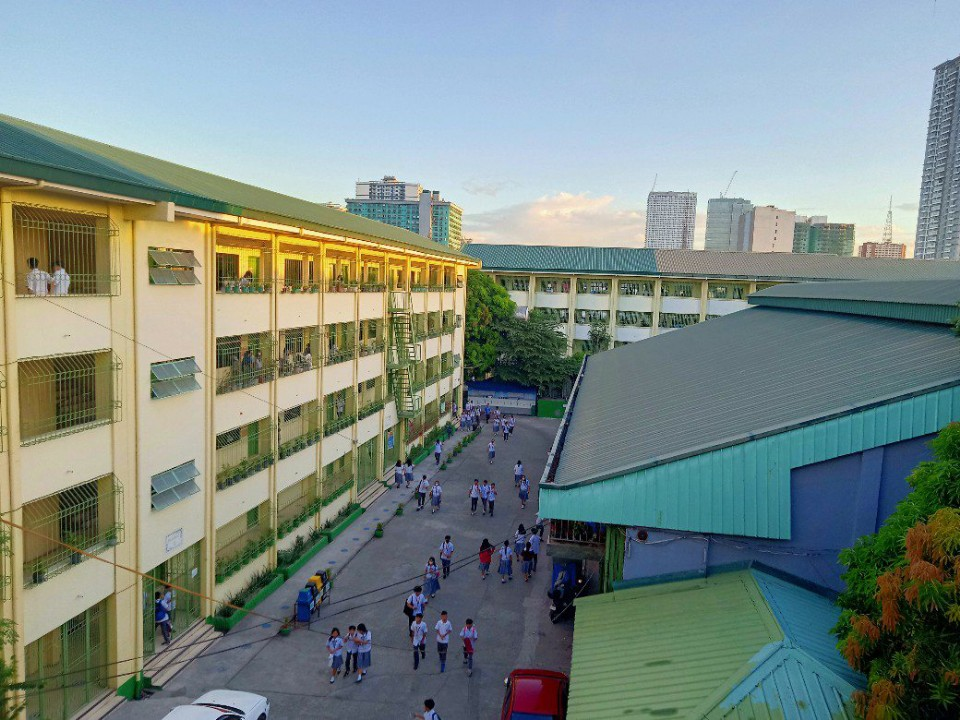
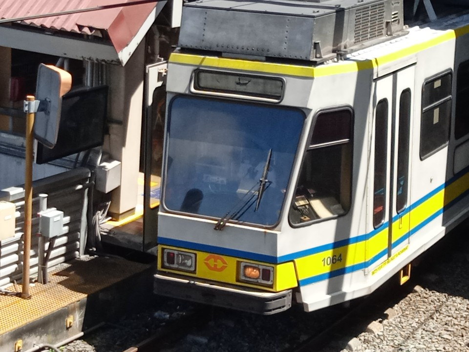
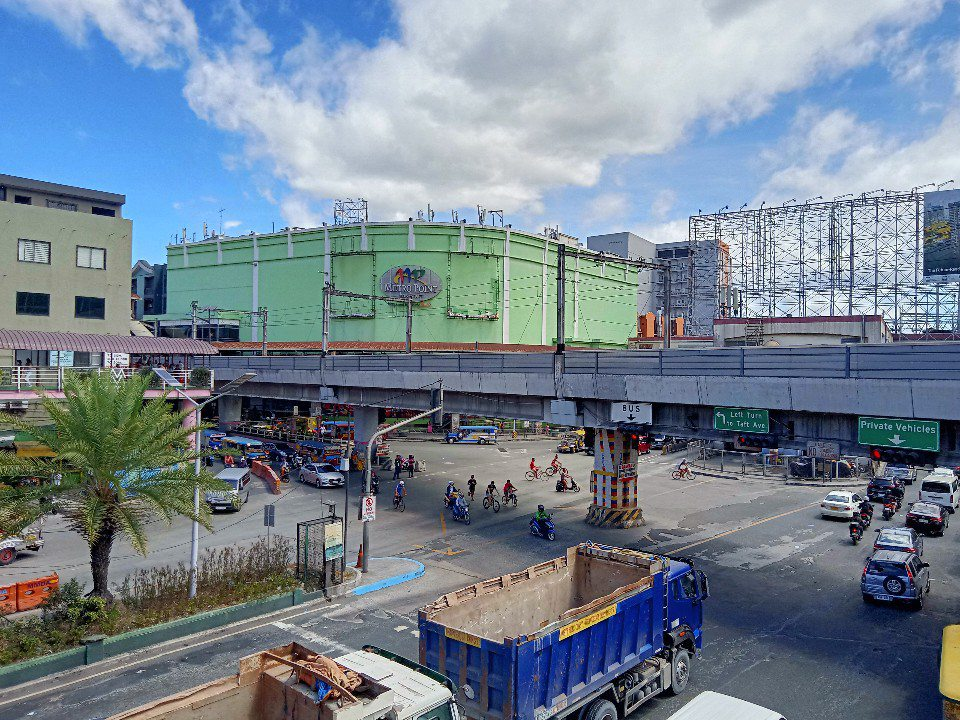
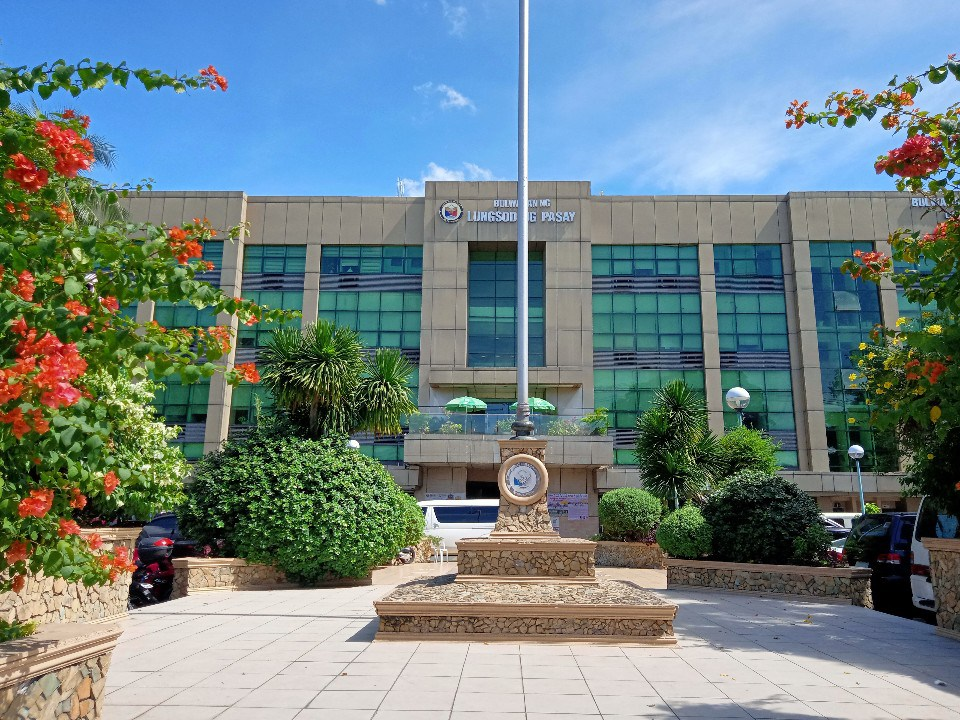
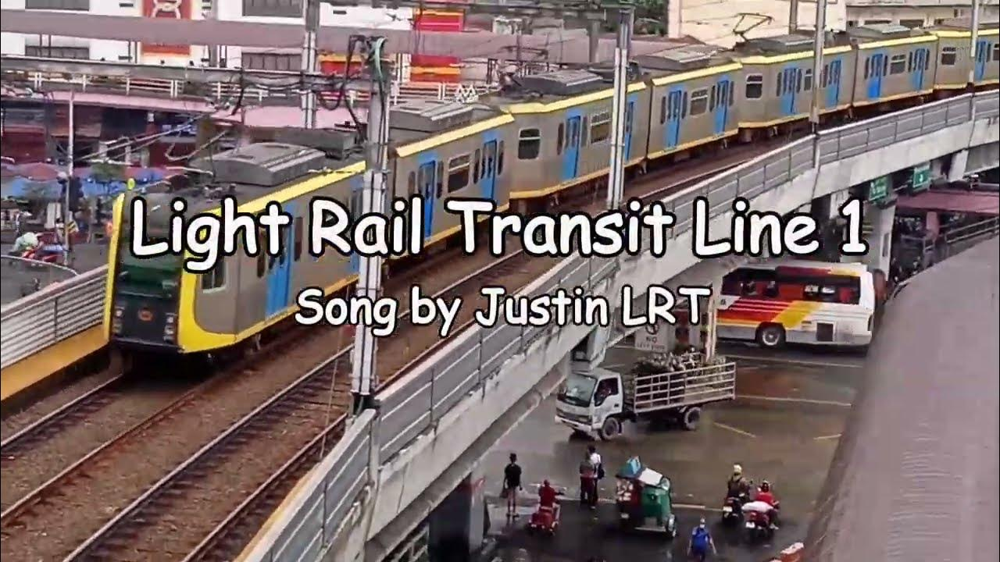
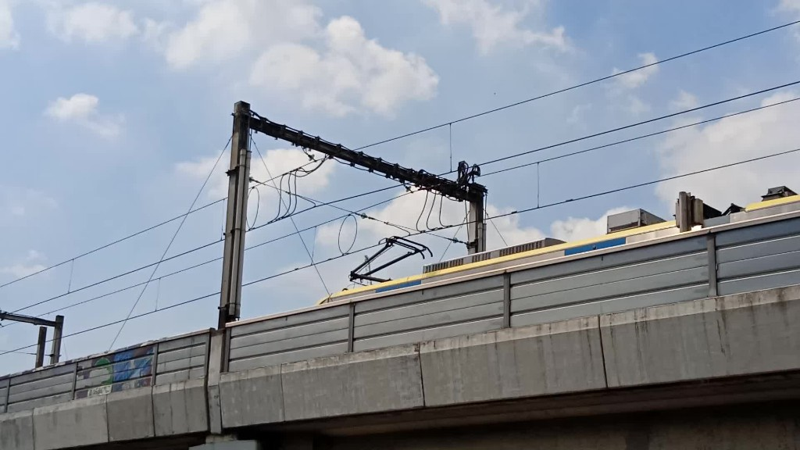
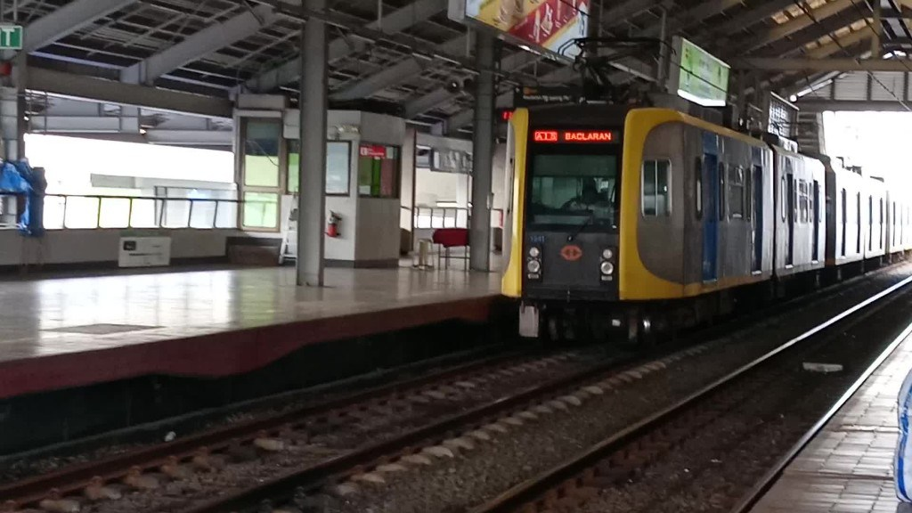

About Justin LRT
Hello there! My name is Justin. I am a proud graduate of Pasay City West High School, a digital photographer, a song composer, and a passionate rail enthusiast. I frequently ride the LRT-1 because I love its fast speeds, reliable safety, and crisp air conditioning.
Educational Background
I attended P. Villanueva Elementary School from kindergarten to Grade 6. While learning presented its challenges, I thoroughly enjoyed our campus gatherings and school parties.In 2020, I entered Pasay City West High School as a Grade 7 student. The pandemic made remote learning difficult; without AI tools or assistants, I had to complete thick, printed modules completely on my own. Navigating complex questions in isolation was tough, and the setup impacted my early grades.
In August 2022, I was thrilled to return to face-to-face classes. I adapted quickly to the classroom environment, which drastically improved my learning efficiency and lifted my grades.
During Senior High School, I pursued the Accountancy, Business, and Management (ABM) strand. I aspire to become a professional accountant so I can confidently build, finance, and manage my own business ventures.
I successfully graduated from high school on March 24, 2026.
Life at Pasay City West High School

Every single school day brought a lot of joy because I could collaborate with friends and create engaging vlogs of our student life.
I studied intensely to maintain my standing. True learning requires constant concentration on upcoming academic hurdles. To me, failure is just a stepping stone to success—whenever an exam or quarter grade dropped, I channeled that momentum to bounce back stronger in the following quarters. Ultimately, I graduated as an honor student.
While I have moved on from high school, I left behind invaluable memories. Current students and faculty members continue to support my creative projects and digital platforms.
As I embark on my journey as a first-year college student, I keep the high school memories close. Since several of my close friends are still studying there, I look forward to visiting campus down the road.
Click here to learn more about my high school journey.
Photography Portfolio
 |
|
 |
|
 |
|
A collection of moments captured across various locations.
I am constantly tracking and capturing visually striking landscapes, architectural lines, and candid high school memories.
My photography journey began in 2021, inspired by the beautiful horizons visible from the roof of my house. Once face-to-face classes resumed, I expanded my scope to capture real-time street photography and campus media.
By 2024, my archive expanded significantly, featuring high-quality images across various regions in Luzon.
Click here to explore my full digital photography gallery.
My photography journey began in 2021, inspired by the beautiful horizons visible from the roof of my house. Once face-to-face classes resumed, I expanded my scope to capture real-time street photography and campus media.
By 2024, my archive expanded significantly, featuring high-quality images across various regions in Luzon.
Click here to explore my full digital photography gallery.
Song Composition

My most popular release to date: "Light Rail Transit Line 1."
In 2017, I composed an early track titled
20 Stations of LRT-1, mapping station names over the structural melody of
12 Days of Christmas.
On March 28, 2019, I performed
20 Stations of LRT-1live for the first time during a closing event at Welcome Plaza, Pasay City. The song gained modest traction among local fans until 2022.
In 2023, I decided to permanently archive and retire
20 Stations of LRT-1because I wanted to shift away from plagiarized melodies and repetitive structures toward completely original work.
Following that choice, I wrote a brand new track titled
Light Rail Transit Line 1, drawing directly from over a year of everyday commuting experiences. Released in February 2024, the song became a viral success within the local community, accumulating over 64,000 views.
My biggest live performance took place during our Junior Prom on April 4, 2024. The student body turned the event into a massive concert, singing along to
Light Rail Transit Line 1word-for-word.
By the end of the year, the track officially ranked as the number one Philippine railway fan song of 2024.
"Kinupit Dahil Sa Korapsyon," a protest-themed track promoting civic transparency.
Kinupit Dahil Sa Korapsyon. This piece aims to build broad awareness for regular Filipinos impacted by poor governance, infrastructure mismanagement, high consumer taxes, and inflation hikes.
The song serves as an independent call for accountability and transparent leadership to secure a more stable future for the country.
I continue to actively write, produce, and compose new music for listeners across the Philippines and around the world.
Listen to my complete catalog here.
Rail Enthusiast
As a dedicated rail enthusiast, I document and archive high-quality video and photo assets primarily centering around the LRT-1, along with occasional coverage of the LRT-2 and MRT-3. This project forms a core pillar of my content creation and monetization strategy. Throughout high school, I spent hours trainspotting at the EDSA-Taft Pasay Rotonda junction and regularly commuted along the Libertad-EDSA segment.My daily railfan activities scaled down temporarily in late 2024 due to moving to a new residential location further from my usual high school transit route.
Currently, I still catch train rides for major travel routes. However, my consistent Libertad-to-EDSA rounds are scheduled to return in full force in July 2026 as I begin my college transit routine. In the meantime, I keep my rail passion going by systematically building technical, functional replicas of the rail networks inside Minecraft.
Trainspotting

Inaugural trainspotting session at Pasay Rotonda on November 10, 2022.
I continued refining my filming methods through 2022, completing my first dedicated extended trainspotting session at that same location on November 5, 2022.
By November 9, 2022, I gained full independence in navigating my school commutes, allowing me to plan my first major field session for the very next day.
That field deployment on November 10, 2022, was a massive success.
Since then, I have regularly staged my gear at the high-traffic EDSA-Taft Pasay Rotonda hub and various platform spots to gather raw transit assets.
I have logged hundreds of individual train sets between that first deployment and today. Currently, I stand as one of the most consistent creators in the community, uploading daily transit videos.
Click here to view my full LRT-1 trainspotting data logs.
Rides and Analytics

First major milestone ride from Baclaran to Libertad on December 15, 2022.
On November 17, 2022, I took my first train ride after a four-year hiatus. Moving from Libertad to EDSA, the experience instantly re-ignited my passion for rail systems.
Shortly after, on December 15, 2022, I completed a transit run from Baclaran to Libertad, marveling at how much the station footprints had scaled over the years. By 2024, my routes expanded across the line to Doroteo Jose for deeper network tracking.
To date, I have logged more than 250 individual trips on the LRT-1 system since returning to the rails in 2022.
Click here to review my logged LRT-1 commuter data.
Minecraft Technical Simulation
Vlogging and Public Engagement
I produce high-quality local vlogs to connect deeply with my audience, ensuring that my followers, subscribers, and regular viewers have a direct look into my projects.My vlogging spans across rail operations, community transit, and unique high school milestone events—capturing school rallies, sudden calendar suspensions, artistic presentations, and unexpected local events.
Key coverages in my video production catalog include:
-
LRT-1 Trainspotting Series
- Pasay Rotonda Hub
- Libertad Station Platforms
-
LRT-1 Commuter Route Vlogs
- Libertad to EDSA / EDSA to Libertad
- Libertad to Baclaran / Baclaran to Libertad
- Libertad to Baclaran to EDSA Loop
- EDSA to Carriedo / Libertad to Carriedo
- Doroteo Jose to Libertad / Doroteo Jose to EDSA
- Libertad to Redemptorist / Redemptorist to Libertad
- Libertad to Redemptorist to EDSA Run
- EDSA to Redemptorist to Libertad Run
- Gil Puyat to Libertad
- Libertad to Vito Cruz / Vito Cruz to Libertad
-
LRT-2 Commuter Route Vlogs
- Recto to Cubao Intermodal Hub
- MRT-3 Commuter Route Vlogs
- Taft Avenue to Shaw Boulevard
- Taft Avenue to Cubao / Cubao to Taft Avenue
- Shaw Boulevard to Ayala Logistics Center
- Ayala to Taft Avenue Terminal
-
Street Level Walking Tours
- Pasay Rotonda Intersection Operations
- Baclaran to EDSA Commuter Corridors
- Jeepney Commutes: Pasay Rotonda to Pasay City West High School
-
Pasay City West High School Historical Log
- Cultural Dance Competitions
- Academic Programs and Ceremonies
- Safety Drills and Real-Time Earthquake Responses
- Unexpected Weather Class Suspensions
- Candid Campus Footage and Gate Openings
- Academic Roleplays and Presentations
- Official Flag Raising Ceremonies
Founder of Justin LRT Media Unlimited
I founded and independently operate Justin LRT Media Unlimited as a highly localized, school-grounded media and student service initiative. Rather than tracking nationwide commercial markets, my operations focus strictly on assisting students within my campus while broadcasting public interest transit updates across Metro Manila via the web.I provide direct peer support resources for local students facing academic or campus hurdles, alongside producing digital media content to analyze critical infrastructure issues throughout the capital region.